この講義の第１回目に，「あなたがコンピュータを使ってしたいことを３つ挙げてください」という課題を課しました．ここでは仮に，それを「ホームページ制作，ＣＧ制作，グラフィックデザイン」だったとします（一応「デザイン情報学科」だから）．ということは，これらの仕事にコンピュータが使えるということを，皆さんは既にご存知だということになります．そこで今回は，どうやったらそういう仕事をコンピュータにさせられるのかについて考えてみたいと思います．
普通，こういう話は講義の第１回目でやるべきことだとは思うのですが，第１回目だと多分実感が湧かないと思ったので，一通りやってからすることにしました（観念的な話なのでわかりにくかったら御免）．
コンピュータは，日本語で「電子計算機」と言ったりします．つまり，コンピュータの本来の仕事は「計算」なんです．この他に「記憶」と「判断」も，コンピュータの主要な機能です．ＣＧなんてのは「計算で絵を作ってるな」という感じがしますが，よく考えると，こういう仕事が「計算」と「記憶」と「判断」で実現できるというのは結構不思議です．実は，こういったコンピュータのアプリケーション（用途）と，コンピュータ本来の機能との間には，大きなギャップ（隔たり）があるのです．そして，このギャップを埋めているのがソフトウェアです．
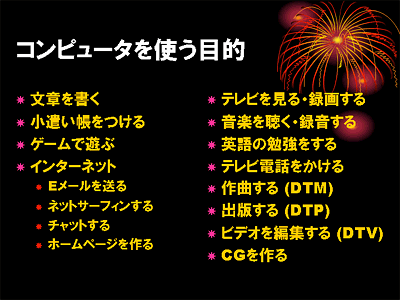
ソフトウェアによって，コンピュータは様々な目的に使うことのできる道具になります．でも，ここでよ～く考えてみましょう．コンピュータで文章を書くためには，その前に文章を書く能力自体が必要です．ゲームで遊ぶときも，遊び方がわからなければ面白くありません．テレビを見るにしても，見たい番組がなければ見る気は起こりません．作曲するにしても，出版するにしても，そういう知識や能力や興味がなければ，コンピュータは使えないのです．
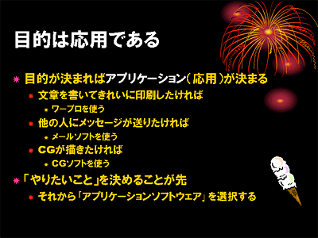
皆さんはmv コマンドが何をするコマンドか覚えているでしょうか？ファイルを保存する場所を間違えたりしてファイルを移動しなければならない状況になって，はじめて mv コマンドの意味が理解できたりします．つまり，自分にとってそれが必要だという状況（目的）を持つことは，コンピュータを学ぶ上で非常に重要なことなのです．英単語を覚えるようにコマンドを覚えても，多分使えないでしょう．
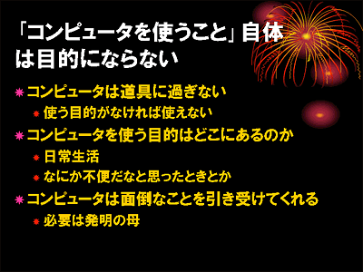
ソフトウェアは，人間の要求をコンピュータに指示するためのインタフェース（介在物，接続点）に過ぎません．人間の要求はコンピュータ自体を使うことではなく，それを使って何かを成し遂げるところにありますから，そういう要求のないところにソフトウェアは存在し得ないのです．「Webページ」をソフトウェアとして捉えた場合，それが成し遂げようとする目的，すなわちコンセプトが明確でなければ，そのソフトウェアはうまく機能しない（レイアウトが乱れるというとかそういう話ではなくて，誰にも見てもらえないという Web ページがもつ情報公開の機能が有効に働いていない状況）ことになります．
だから「コンピュータの勉強」とは，たとえば「ワープロで字を大きくする方法」や「Webページで文字を中央にそろえる方法」を知ることではないと考えています．字を大きくしたり中央にそろえたりするのは，「何か」を目に見える形に置き換える手段に過ぎません．そしてその「何か」とは，そこで表現しようとするコンセプトのもののはずです．
「Webページ」を例にとれば，その主要なコンテントである文書という「ソフトウェア」の設計（すなわちデザイン）を考えることのほうが，もっと大事な問題なのです．設計の悪い文書は，コンセプトをうまく表現できません．また，レイアウトするときにも余計に手間がかかります．そこで場当たり的なレイアウトを行ったりすると，結果的に非常に読みにくいものに仕上ってしまいます．
「デザイン」するという本当に人間にしかできない仕事を，コンピュータを「うまく」使って，もっと楽に，もっと上手に，もっと創造力豊かに行えるようにしようというのが，「デザイン情報学科」のコンセプトです．
アプリケーションとコンピュータの機能との間のギャップは非常に大きいので，その間を単一のソフトウェアで埋めることには，大きな困難が伴います．そこで，このギャップをいくつかの「層」に分けて個別にソフトウェアを作成し，それらを組み合わせて一つの大きな仕事を達成しようという戦略が採られます．最も大きな分け方をした場合，これは実際に仕事をする「アプリケーションソフトウェア」と，その土台となる「オペレーティングシステム」の２つの層に分けることができます．
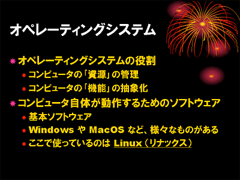
この講義で使っている Linux というオペレーティングシステムは，Unix というオペレーティングシステムの影響を受けて開発されました．影響を受けたと言うより，ほとんど同じものを別の人が一から作り直したもの，と言った方がいいかもしれません．作り始めたのは Linus Torvalds というフィンランドのヘルシンキ大学の大学院生（当時）です．
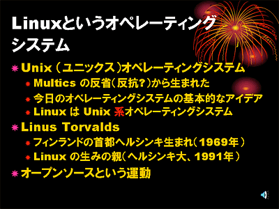
1965年，当時のコンピュータ技術の粋を集めた最先端のオペレーティングシステムの開発が始まりました．Multics (Multiplexed Information and Computing Service) と呼ばれたそのオペレーティングシステムは，あらゆることが可能な理想のオペレーティングシステムになるはずでした．しかし当時のコンピュータにとって，それはあまりにも大きく，遅いものになってしまいました．Unix はこの反省から，Multics の持つ機能の大半を削り落とし，非常にシンプルでコンパクトなオペレーティングシステムとして1969年に生まれました．
機能を削ったと言っても，Unix には階層型のファイルシステムなど，現在のオペレーティングシステムの基本となる要素が数多く含まれていました．その後1972年には，Unix は C 言語（情報処理II以降で学習します）を使って書き直され，1975年頃からそのソースコード（ソフトウェアの設計図）が教育や研究の素材として世界中の大学や研究機関に販売されたこともあって，コンピュータサイエンスの世界で爆発的に普及していきました．
この過程で Unix はどんどん機能を増していきました．機能が増えたことで Unix も Multics 同様大きく重くなってしまいましたが，コンピュータのハードウェア性能の向上により，それはあまり気にならなくなっていました．それよりも機能が増えて実用性が高まった Unix は，それまでの教育や研究の素材としてだけではなく，企業が実際の業務で使用するコンピュータのオペレーティングシステムとして大きな価値を持つようになりました．
そしてこのことは，それまで教育や研究のためにそれを使っていた（ソースコードを見て勉強したり，自分で新しい機能を作ったりしていた）人の手から，Unix を遠ざける結果を招いてしまいました．しかし，何人かの人たちは，「それじゃあ同じものを自分で作ってしまおう」と考えたわけです．Linus Torvalds もそういう一人でした．
ここで Linus は他の人とちょっと違うことを二つやりました．一つは，「それ（つまり Unix と同じもの）」を作るときに，まず自分が作ったソースコードを包み隠さず公開したことです．こういうやり方はオープンソースと呼ばれます．Unix が結果的にそうなってしまったように，ソースコードは隠すのが普通です．ソースコードはアイデアの塊ですから，それを公開することは，そのアイデアから得られるであろう利益をみすみす捨ててしまうことのようにも思えます．
もう一つは，公開したソースコードを元に，「みんな」で一緒になって「それ」を作り上げていくことにしたことです．この「みんな」というのが，当時のほかの人たちには信じられないことでした．つまり，「それ」を作るのに携わる人は，お互いの能力を把握している気心？の知れたメンバーに限るのが普通でしたから，どこの誰ともわからない人まで巻き込んでワイワイとやるやり方がうまくいくとは誰も思っていませんでした．
しかし，結果的にこのやり方は，ものすごいエネルギーを持って「それ」を作り上げることに成功してしまいました．もちろんこの背景には，電子メールやネットニュースといった新しい通信手段の存在があったことは言うまでもありません．そして，その後のインターネットが普及は，これを爆発的に加速させました．こうして出来上がった「それ」，すなわちオペレーティングシステムが Linux です．
このようなソフトウェア開発手法に関する考察として，Eric S. Raymond 著 The Cathedral and the Bazaar （山形浩生氏の訳「伽藍とバザール」）という有名な論文があります．
初期の Unix からは省かれた機能（だから Multi- じゃなくて Uni- になった）ですが，現在の Unix あるいは Linux の重要な機能に「マルチタスク機能」があります．これは同時に複数の「仕事」を処理できる機能です．
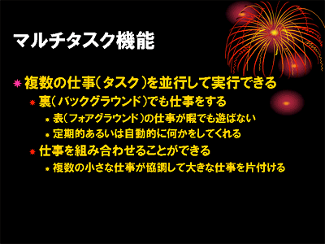
たとえばテキストエディタを使っているとき，実際にコンピュータが仕事をするのは，キーをタイプして編集中のテキストを更新し，その結果が画面に表示されるまでの間です．これは一瞬に行われます．つまり，キーをタイプして次のキーをタイプするまでの間は，コンピュータはほとんど遊んでいるのです．したがって，その余った処理能力を他の仕事や他の人に回せば，時間や消費電力やコンピュータの台数など，様々な無駄を省くことができます．
w コマンドや top コマンドを使うと，コンピュータがどれだけ忙しいか，どんな仕事にどれだけ時間を割いているのか知ることができます．また xload コマンドは現在の忙しさ（負荷）をグラフで表示してくれます．アプレットの「モニタ」の中にも，これらを表示するものがいくつかあります．
処理能力を他の人に回すことができれば，１台のコンピュータを複数の人で同時に使用できるようになります．以前は１台のコンピュータに複数の端末装置を接続し，多人数で利用することが一般的でした（パソコン，すなわち個人用のコンピュータ以外の世界では今でも行われています）．このような機能を「マルチユーザ機能」と言います．
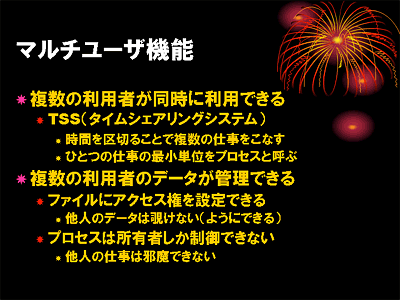
ただし，これを実現するには異なる利用者の仕事が邪魔しあったりしないように，それらの利用者の仕事やデータを「管理」する機能が必要になります．「ユーザアカウント」は，ファイルやディレクトリ，あるいは実行中のコマンドの所有権に結び付けられていて，他人が所有するデータを勝手に変更したり，他人が実行しているコマンドを勝手に止めたりできないようになっています．
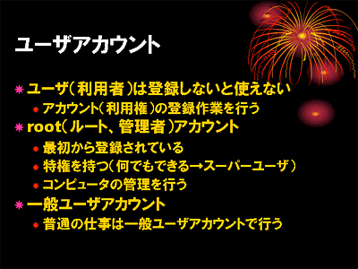
唯一，root というユーザだけが，このような制限を越えてプログラムやデータを操作できるようになっています．このようなユーザアカウントを「特権ユーザ」と呼びます．これはシステムの管理用なので，一般の利用者の仕事には使用しません．
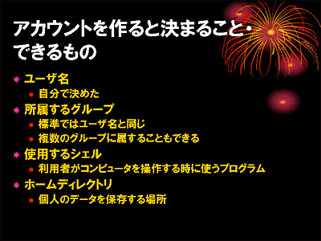
さて，ユーザアカウントを取得すると，いくつかのものが用意されます．ユーザ名（ログイン名）は，自分のコンピュータに Linux を入れたときには自分で決められるのですが，演習室のコンピュータで使用する学生用のユーザアカウントはあらかじめ用意しているので，勝手に決めることはできません．所属するグループも，学生の場合は students に統一しています．なお，ユーザは複数のグループに所属することができ，これを使って特定のグループに属するユーザだけがアクセス可能なファイルやディレクトリを作成することもできます．
実際に複数の仕事を並行して実行できるところを確かめてみましょう．もちろん画面上には同時に動いているウィンドウやアイコンがいくつか存在すると思いますが，ここではコマンドを使って試してみます．
たとえば，ターミナルのシェルから，コマンドによって別のターミナルのウィンドウを開くことができます．以下の例は rxvt というコマンドを使用していますが，これは gnome-terminal 同様，ターミナルのウィンドウを開くコマンドです．
| コマンドでターミナルを開く | |
|---|---|
| rxvt コマンドを実行する |
% rxvt[Enter] |
rxvt コマンドを実行すると，同じようなターミナルのウィンドウが開きます．設定によって，この図とは異なる場合があります．このターミナルのウィンドウ内ではシェルが起動され，ユーザのコマンド入力を待っています．
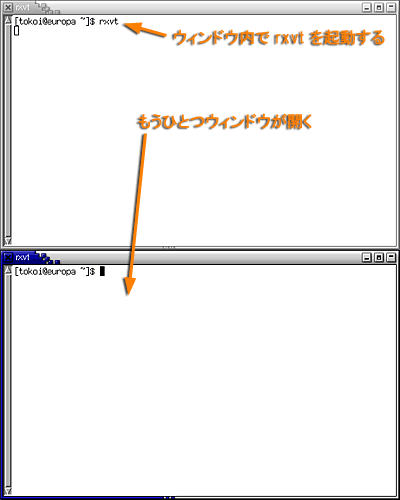
新しく開いたターミナルのウィンドウでも，同じようにコマンドが実行できます．しかし，もとのターミナルのターミナルのウィンドウでは，コマンドを受け付けなくなります．
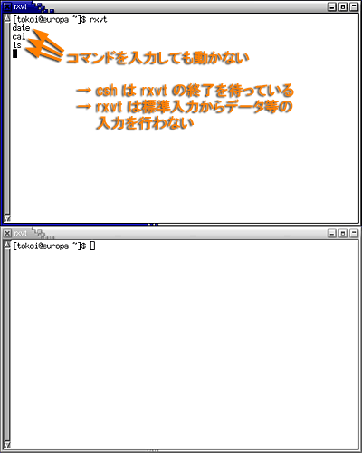
これは，もとのターミナルのウィンドウ内で起動されているシェルが，そこから起動した rxvt コマンドの終了を待っているからです．
仕方がないので，もとのターミナルで Ctrl-C をタイプして，新しく起動したターミナルのウィンドウに割り込みをかけてください．するとターミナルのコマンドが終了するため，新しく起動したもう一方のウィンドウは消えてしまいます．
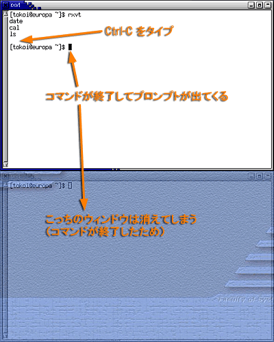
もう一度 rxvt を起動してターミナルのウィンドウを開き，今度は Ctrl-Z をタイプしてください．今度はもう一方のウィンドウは消えません．しかし，もう一方のウィンドウは全く応答してくれません．
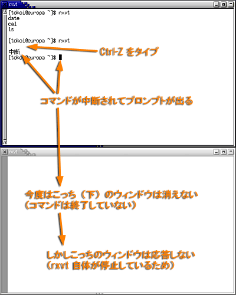
Ctrl-Z は，コマンドの実行を一旦停止させます．
停止しているコマンドを再開するには，fg コマンドを使用します．
| フォアグラウンドで動かす | |
|---|---|
| fg コマンドを実行する |
% fg[Enter] |
fg コマンドを実行すると，再びもう一方のウィンドウが動き出します．しかし，もとのウィンドウは再びコマンドを受け付けなくなります．これは，もとのウィンドウのシェルがコマンドの終了を待っているからです．コマンドがシェルを待たせて動作している状態を，フォアグラウンドで走っていると言います．
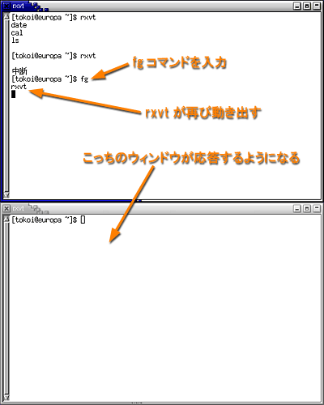
もとのウィンドウでもう一度 Ctrl-Z をタイプし，今度は bg コマンドを実行してください．bg コマンドも停止しているコマンドの実行を再開しますが，その際にシェルを待たせません．
| バックグラウンドで動かす | |
|---|---|
| bg コマンドを実行する |
% bg[Enter] |
したがって bg コマンドを使った場合には，コマンドで起動した rxvt がもとのシェルと並行して（同時に）動くため，両方のウィンドウが使えるようになります．このようにコマンドが起動したシェルと並行して動いている状態をバックグラウンドで走っているといいます．
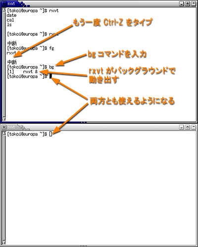
もとのウィンドウで jobs コマンドを実行すれば，このシェルのバックグラウンドで走っているコマンド（バックグラウンドジョブ）の一覧が表示されます．
| ジョブの一覧を見る | |
|---|---|
| jobs コマンドを実行する |
% jobs[Enter] |
下図の状態では，新しいターミナルのウィンドウ (rxvt) が，元のウィンドウのシェルと並行して実行されています．
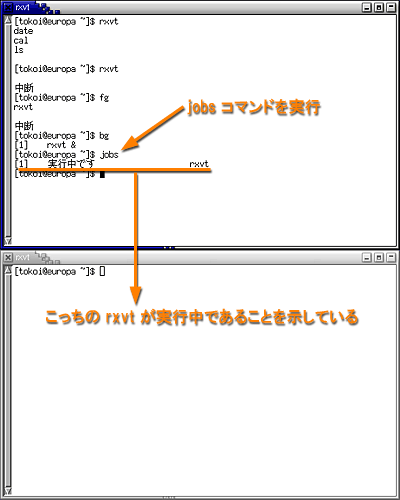
コマンドを実行する際に & を後ろにつけると，そのコマンドを最初からバックグラウンドで動かすことができます．
| コマンドをバックグラウンドで起動する | |
|---|---|
| rxvt コマンドをバックグラウンドで実行する |
% rxvt &[Enter] |
したがって，& を付けてコマンドを実行した場合には，すぐにプロンプトが現れます．
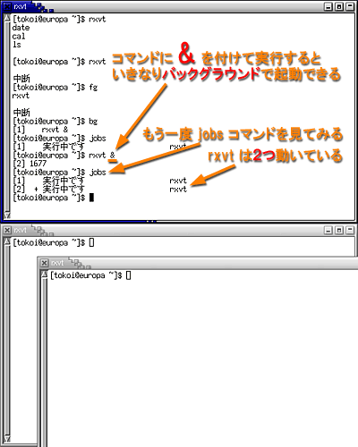
このように，シェルは複数のコマンドを同時に実行できます．実行中のコマンドのことをジョブと言います．上の図では，jobs コマンドでバックグラウンドジョブが２つ走っていることがわかります．jobs コマンドの出力の各行の先頭の [数字] は，ジョブ番号と言います．kill コマンドの引数に "%ジョブ番号" を指定すれば，そのジョブに割り込みをかけて終了させることができます．
| kill コマンドを使ってジョブを制御する | |
|---|---|
| ジョブに割り込みをかける |
% kill %1[Enter] |
| ジョブを停止させる |
% kill -STOP %1[Enter] |
| ジョブを強制的に終了させる |
% kill -KILL %1[Enter] |
kill コマンドにオプションをつけなければ，ターミナルのウィンドウで Ctrl-C をタイプしたのと同じです．"-STOP" オプションを付けた場合はCtrl-Z をタイプしたのと同じです．"-KILL" オプションを付けたときは，コマンドに有無を言わさず終了させます．
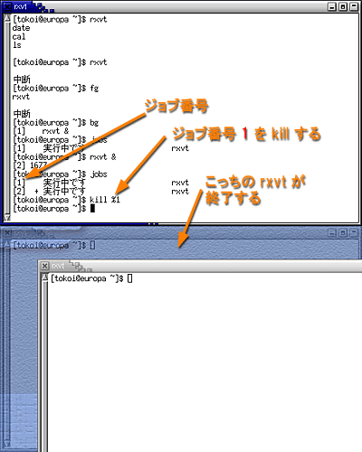
fg コマンドや bg コマンドも，引数にジョブ番号を指定できます．ジョブ番号を省略したときは，最後に関わったジョブ（jobs コマンドの出力に + がついているもの）が指定されます．
ここまでで出てきたコマンド
- fg
- コマンドの実行をフォアグラウンドで再開します．
- bg
- コマンドの実行をバックグラウンドで再開します．
- jobs
- 実行中あるいは停止中のコマンド（ジョブ）の一覧を表示します．
- kill
- コマンドにシグナルを送ります．オプションを省略すれば -INT（キーボード割り込み） を指定したとみなされます．これはキーボードから Ctrl-C をタイプして割り込みをかけるのと同じです．-KILL（強制終了）は，割り込みをかけても終了しないジョブを強制的に終了終了します．
利用者のホームディレクトリ以下のファイルやサブディレクトリは，普通その利用者しか変更できないようになっています．ファイルやディレクトリには所有権が設定されており，所有者や所有者が属しているグループにもとづいて，そのファイルやディレクトリへのアクセス（読み出したり変更したりする行為）を制御できます．この制御情報を保護モードと呼びます．
ls コマンドに -l オプションをつけると，ファイルの詳細な情報を表示します． 以下の出力例は人によって違います．
| ファイルやディレクトリの詳細情報を表示する | |
|---|---|
| ls に -l オプションをつければ，カレントディレクトリにあるファイルの詳細な情報を表示する |
% ls -l[Enter]
drwxr-xr-x 1 s085000 students 27 May 7 09:30 Desktop
drwxr-xr-x 1 s085000 students 27 May 7 09:30 Mail
（以下略）
|
| 引数にサブディレクトリ名を指定すれば，その中にあるファイルの詳細な情報を表示する |
% ls -l Mail[Enter]
drwxr-xr-x 1 s085000 students 27 May 7 09:30 draft
drwxr-xr-x 1 s085000 students 27 May 7 09:30 queue
drwxr-xr-x 1 s085000 students 27 May 7 09:30 trash
（以下略）
|
| -d オプションを追加すれば，そのサブディレクトリ自体の詳細な情報を表示する（-ld は-l -d と同じ） |
% ls -ld Mail[Enter] drwxr-xr-x 1 s085000 students 27 May 7 09:30 Mail |
先頭の１文字はファイルのタイプを示し，これが "-" なら通常のファイル，"d" ならディレクトリであることを示します．続く９文字はファイルの保護モードを示します．これは３文字ずつに区切られ，それぞれファイルの所有者，グループに属するユーザ，それら以外のユーザに対する，そのファイルへのアクセスの可否を表しています．
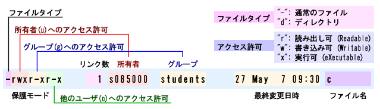
上の例では，ファイル c の保護モードは次のように示されています．
このほかに，このファイルは 27 バイト（英文字 27 文字分）のファイルサイズをもち，「今年」の５月２７日午前９時３０分に作成あるいは変更されたことが示されています．
実行許可 "x" についてファイルの保護モードに x が含まれる場合は，そのファイルが実行可能，すなわちコマンドとして使用できることを意味します．
一方，ディレクトリの保護モードの x は意味が異なり，これはそのディレクトリに cd したり，パス名にそのディレクトリを含めることができること意味します．
ファイルやディレクトリの保護モードを変更するには，chmod コマンドを使用します．皆さんのホームディレクトリには report.tex というファイルがあるはずですから，これを他人が読み出せないようにしてみましょう．
| ファイルの保護モードを変更する | |
|---|---|
| ファイル report.tex の保護モードを確認する |
% ls -l report.tex[Enter] -rw-r--r-- 1 s085000 students 2770 May 7 09:30 c |
| chmod コマンドを使って report.tex から読み出し許可と書き込み許可を取り除く |
% chmod -rw report.tex[Enter] |
| ファイル report.tex の保護モードを確認する |
% ls -l report.tex[Enter] ---------- 1 s085000 students 2770 May 7 09:30 c |
| cat コマンドを使って report.tex を読み出そうとしても読み出せなくなる |
% cat report.tex[Enter] cat: report.tex: 許可がありません |
| 自分だけは report.tex を読み書きできるようにする |
% chmod u+rw report.tex[Enter] |
| ファイル report.tex の保護モードを確認する |
% ls -l report.tex[Enter] -rw------- 1 s085000 students 2770 May 7 09:30 c |
| 今度は cat コマンドで読み出せる |
% cat report.tex[Enter]
（report.tex の内容）
|
保護モードの指定は，u（所有者），g（グループ）， o（他人）のいずれかに，r（読み出し許可），w（書 き込み許可），x（実行許可）のいずれかを，+（付与）したり -（削除）したりすることにより行います．ugo と rwx はそれぞれまとめて指定でき，go-rwx と指定すれば，自分以外の利用者はそのファイルやディレクトリの読み出し・書き込み・実行（カレントディレクトリの変更）がすべてできなくなります．
ここまでで出てきたコマンド
- ｃhmod
- ファイルやディレクトリの保護モードを変更します．
ここではソフトウェアをコンピュータの機能とアプリケーションの間にあるギャップを埋めるインタフェースだと定義付けました．ところが，このギャップは結構大きくて深いために，それを埋めるのには結構苦労します．そのためにソフトウェア工学という分野があるくらいで，たくさんの人が日夜このギャップを埋めようと努力しています．だから，「どうやったらそういう仕事をコンピュータにさせられるか」ということを考えるには，それなりの時間と努力が必要になります．
そこで，ここではコンピュータの動作を非常に単純なモデルで表すことにします．
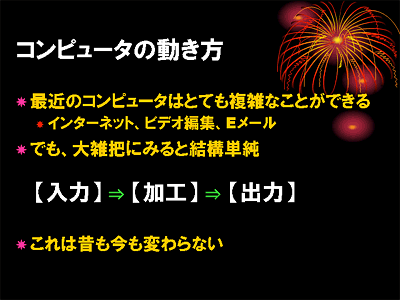
コンピュータはいろんなことができるといっても，それがやっていることを（誤解を恐れずに）ものすごく大雑把に捉えれば，「入力されたデータを加工して出力している」だけに過ぎません．
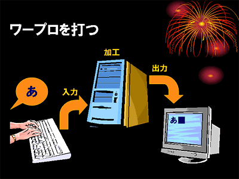
ワープロを使うときも，コンピュータはキーボードをタイプしたことによって発生した電気信号を「文字コード」と呼ばれるデータに変換し，それをワープロの文書内の特定の位置に埋め込んで，その結果を画面に出力（表示）しています．
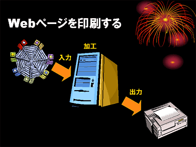
「Webページをプリンタに印刷する」というシチュエーションでも，インターネットから入力された（HTML などの）データを，コンピュータが人間が読みやすいように（スタイル定義などに従って）レイアウトし，プリンタの制御データに変換しているわけです．
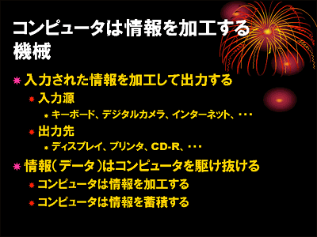
ここでコンピュータは「情報を加工する機械」として動作していると言えます．
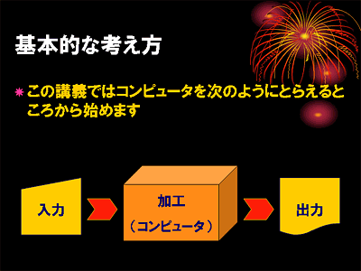
したがって，ここでは（何をしているのかわからない）コンピュータの使い方を，とりあえずデータの「入力」「加工」「出力」の３つの段階に分けて考えることにします．
コマンドの中には実行開始後にキーボードからのデータ入力を必要とするものがあります．
| コマンドへのデータ入力 | |
|---|---|
|
bc コマンドを実行すると，プロンプトは表示されない．ｊこれは bc コマンドがデータの入力を待っている状態． コマンドは入力されたデータを加工し，結果を出力する． 結果は通常画面に表示される． コマンドへのデータ入力を終了するには， Ctrl-D をタイプ（Ctrl キーを押しながら D をタイプ）する． これは入力データの終り(EOF : End of File) を意味する． bc コマンドは入力データとして与えられた数式を計算して， 結果を出力する“電卓”コマンドである． |
% bc[Enter] 2+3[Enter] ←データ入力（プロンプトは出ない） 5 ←出力 Ctrl-D ←入力終了 % ←プロンプトが出てくる |
ここまでで出てきたコマンド
- bc
- 標準入力から与えら得た式を計算し，結果を標準出力に出力します．
コマンドはキーボードなどの入力装置から得たデータをコンピュータに加工させるための「指示書」のようなものです．bc コマンドはコンピュータに対して，入力された数式を計算して答えを出力せよと言う指示を出します．コマンドに標準的に割り当てられているデータの入り口のことを標準入力と言い，通常はキーボードがつながっています．
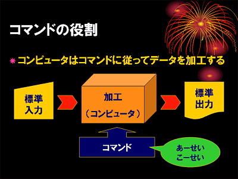
しかし Unix では，コマンド自体が「単純な機能を持ったコンピュータ」だというとらえ方をしたほうが馴染みやすいのではないかと思います．
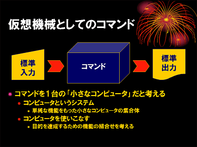
ファイルに保存されているデータをデータ入力に使うこともできます．この操作を標準入力のリダイレクトといいます．
| ファイルからの入力 | |
|---|---|
| cat コマンドを引数なしで実行すると， bc 同様キーボードからのデータ入力を待つ． 適当な文字をタイプすれば， 改行する度にそれがおうむ返しに画面に出力される． |
% cat[Enter] saitou[Enter] saitou suzuki[Enter] suzuki tanaka[Enter] tanaka Ctrl-D |
| 同様に cat を引数なしで実行し， その出力を c というファイルに保存する． |
% cat > c[Enter] 2+3[Enter] 4*5+7[Enter] (3+4)*29[Enter] Ctrl-D |
| ファイル c の内容を cat コマンドの入力データに使う． ファイル c の内容がそのまま表示される． "<" の向きに注意． |
% cat < c[Enter] 2+3 4*5+7 (3+4)*29 |
| ファイル c の内容を bc コマンドの入力データに使う． ファイル c の内容の計算結果が出力される． |
% bc < c[Enter] 5 27 203 |
標準入力のリダイレクト
- "<"という記号の役割
- "<" という文字は，コマンドへのデータ入力を， キーボードをタイプする代りにファイルから行います．
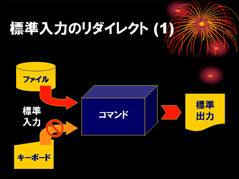
cat コマンドは引数を指定せずに実行すると，標準入力に与えられたデータをそのまま標準出力に出力します．したがって "cat < c" と "cat c" は同じ動作になります．
cat コマンドと bc コマンドでは，同じファイル c の内容を標準入力に加えても，標準出力に出力される結果が異なります．bc コマンドの動作と cat コマンドの動作と比べると，次のようになります．
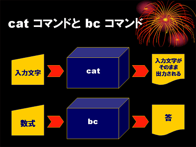
あるコマンドの出力を別のコマンドの入力データに使うこともできます．この機能のことをパイプと呼びます．
| コマンドの出力を別のコマンドに入力 | |
|---|---|
| このようにしても同じ結果が得られる． この場合は cat コマンドの出力をそのまま bc コマンドの入力に流し込んでいる．これを「パイプ」と言う． |
% cat c | bc[Enter]
5 (↑２つ↑のコマンドが同時に動く)
27
203
|
パイプ
- "|"という記号の役割
- "|" という文字は，あるコマンドの標準出力を別のプログラムの標準入力に入力します．
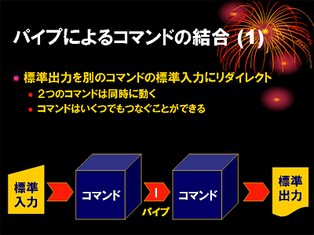
パイプでつながれた２つのコマンドは並行して動作します．これもマルチタスク機能を応用したものです．
パイプを使って複数のコマンドを組み合わせ，標準入力から入ってきたデータを加工して標準出力から得るというのが，Unix 伝統の最も基本的なデータ処理のスタイルです．
| フィルタコマンドの例 | |
|---|---|
| head | 入力データの先頭部分だけを出力する |
| tail | 入力データの末尾部分だけを出力する |
| sort | 入力データを並べ替えて出力する |
| uniq | ダブった入力データを取り除く |
| grep | 指定したパターンにマッチする入力データだけを抽出する |
実際にフィルタを使ってデータを加工してみましょう．仮にこういうデータがあったとします（2002年頃のデータ）．
| こういうデータがありました |
|---|
% cat member.txt[Enter] 安倍 なつみ あべ なつみ 1981 8 10 A 北海道室蘭市 飯田 圭織 いいだ かおり 1981 8 8 A 北海道室蘭市 福田 明日香 ふくだ あすか 1984 12 17 B 東京都大田区 卒業 石黒 彩 いしぐろ あや 1978 5 12 A 北海道札幌市 卒業 中澤 裕子 なかざわ ゆうこ 1973 6 19 O 京都府福知山市 卒業 市井 紗耶香 いちい さやか 1983 12 31 A 千葉県船橋市 卒業 矢口 真里 やぐち まり 1983 1 20 A 神奈川県横浜市 保田 圭 やすだ けい 1980 12 06 A 千葉県富津市 安倍 なつみ あべ なつみ 1981 8 10 A 北海道室蘭市 後藤 真希 ごとう まき 1985 9 23 O 東京都江戸川区 吉澤 ひとみ よしざわ ひとみ 1985 4 12 O 埼玉県入間郡 石川 梨華 いしかわ りか 1985 1 19 A 神奈川県横須賀市 加護 亜依 かご あい 1988 2 7 AB 奈良県大和高田市 辻 希美 つじ のぞみ 1987 6 17 O 東京都板橋区 |
このデータに含まれる行数や文字数，単語数を調べてみます．wc コマンドは標準入力に与えられたデータの文字数，単語数，行数を数えるコマンドです．
| 行数や文字数，単語数を調べる |
|---|
% wc member.txt[Enter]
14 131 719 member.txt （14行ある？一人多い？）
|
データが一つ多いようです．原因を調べるために，データを並べ替えて見ましょう．
| 並べ替えてみよう |
|---|
% sort member.txt[Enter]
安倍 なつみ あべ なつみ 1981 8 10 A 北海道室蘭市
安倍 なつみ あべ なつみ 1981 8 10 A 北海道室蘭市 （一人だぶっている！）
加護 亜依 かご あい 1988 2 7 AB 奈良県大和高田市
吉澤 ひとみ よしざわ ひとみ 1985 4 12 O 埼玉県入間郡
後藤 真希 ごとう まき 1985 9 23 O 東京都江戸川区
市井 紗耶香 いちい さやか 1983 12 31 A 千葉県船橋市 卒業
石黒 彩 いしぐろ あや 1978 5 12 A 北海道札幌市 卒業
石川 梨華 いしかわ りか 1985 1 19 A 神奈川県横須賀市
中澤 裕子 なかざわ ゆうこ 1973 6 19 O 京都府福知山市 卒業
辻 希美 つじ のぞみ 1987 6 17 O 東京都板橋区
飯田 圭織 いいだ かおり 1981 8 8 A 北海道室蘭市
福田 明日香 ふくだ あすか 1984 12 17 B 東京都大田区 卒業
保田 圭 やすだ けい 1980 12 06 A 千葉県富津市
矢口 真里 やぐち まり 1983 1 20 A 神奈川県横浜市
|
データがダブっていることが判明しました．それでは，ダブったデータを取り除きましょう．
| ダブったデータを取り除く |
|---|
% sort member.txt | uniq[Enter]
安倍 なつみ あべ なつみ 1981 8 10 A 北海道室蘭市 （ダブりがなくなった！）
加護 亜依 かご あい 1988 2 7 AB 奈良県大和高田市
吉澤 ひとみ よしざわ ひとみ 1985 4 12 O 埼玉県入間郡
後藤 真希 ごとう まき 1985 9 23 O 東京都江戸川区
市井 紗耶香 いちい さやか 1983 12 31 A 千葉県船橋市 卒業
石黒 彩 いしぐろ あや 1978 5 12 A 北海道札幌市 卒業
石川 梨華 いしかわ りか 1985 1 19 A 神奈川県横須賀市
中澤 裕子 なかざわ ゆうこ 1973 6 19 O 京都府福知山市 卒業
辻 希美 つじ のぞみ 1987 6 17 O 東京都板橋区
飯田 圭織 いいだ かおり 1981 8 8 A 北海道室蘭市
福田 明日香 ふくだ あすか 1984 12 17 B 東京都大田区 卒業
保田 圭 やすだ けい 1980 12 06 A 千葉県富津市
矢口 真里 やぐち まり 1983 1 20 A 神奈川県横浜市
|
出力されたデータの数が正しいかどうか，wc コマンドを使って確認してみます．
| データの数を確認してみる |
|---|
% sort member.txt | uniq | wc[Enter]
13 122 670 （13行になった！）
|
どうやら正しいようなので，この出力をファイルに保存しておきます．
| 正しいデータを保存しておこう |
|---|
% sort member.txt | uniq > morning.txt[Enter] |
このデータは苗字の順に並んでいますが，苗字は漢字なので，必ずしも名簿順（五十音順）に並んでいるとは限りません．そこで，読み仮名を使ってこのデータを並べ替えてみます．読み仮名はデータの３つ目と４つ目の欄にあります．
| 名簿順に並べ替える |
|---|
% sort -k 3,4 morning.txt[Enter] 安倍 なつみ あべ なつみ 1981 8 10 A 北海道室蘭市 飯田 圭織 いいだ かおり 1981 8 8 A 北海道室蘭市 石川 梨華 いしかわ りか 1985 1 19 A 神奈川県横須賀市 石黒 彩 いしぐろ あや 1978 5 12 A 北海道札幌市 卒業 市井 紗耶香 いちい さやか 1983 12 31 A 千葉県船橋市 卒業 加護 亜依 かご あい 1988 2 7 AB 奈良県大和高田市 後藤 真希 ごとう まき 1985 9 23 O 東京都江戸川区 辻 希美 つじ のぞみ 1987 6 17 O 東京都板橋区 中澤 裕子 なかざわ ゆうこ 1973 6 19 O 京都府福知山市 卒業 福田 明日香 ふくだ あすか 1984 12 17 B 東京都大田区 卒業 矢口 真里 やぐち まり 1983 1 20 A 神奈川県横浜市 保田 圭 やすだ けい 1980 12 06 A 千葉県富津市 吉澤 ひとみ よしざわ ひとみ 1985 4 12 O 埼玉県入間郡 |
tail コマンドを使って，この出力の最後の２行だけを取り出してみます．
| 名簿順で最後の二人を取り出す |
|---|
% sort -k 3,4 morning.txt | tail -2[Enter] 保田 圭 やすだ けい 1980 12 06 A 千葉県富津市 吉澤 ひとみ よしざわ ひとみ 1985 4 12 O 埼玉県入間郡 |
今度は誕生日順で並べ替えてみましょう．誕生日は５～７つ目の欄にあります．なお，数字を数値として並べ替えるには，sort に -n というオプションを付けます．
| 誕生日順に並べ替える |
|---|
% sort -k 5,7 -n morning.txt[Enter] 中澤 裕子 なかざわ ゆうこ 1973 6 19 O 京都府福知山市 卒業 石黒 彩 いしぐろ あや 1978 5 12 A 北海道札幌市 卒業 保田 圭 やすだ けい 1980 12 06 A 千葉県富津市 安倍 なつみ あべ なつみ 1981 8 10 A 北海道室蘭市 飯田 圭織 いいだ かおり 1981 8 8 A 北海道室蘭市 市井 紗耶香 いちい さやか 1983 12 31 A 千葉県船橋市 卒業 矢口 真里 やぐち まり 1983 1 20 A 神奈川県横浜市 福田 明日香 ふくだ あすか 1984 12 17 B 東京都大田区 卒業 吉澤 ひとみ よしざわ ひとみ 1985 4 12 O 埼玉県入間郡 後藤 真希 ごとう まき 1985 9 23 O 東京都江戸川区 石川 梨華 いしかわ りか 1985 1 19 A 神奈川県横須賀市 辻 希美 つじ のぞみ 1987 6 17 O 東京都板橋区 加護 亜依 かご あい 1988 2 7 AB 奈良県大和高田市 |
この１行目だけを取り出してみます．
| 最年長者 |
|---|
% sort -k 5,7 -n morning.txt | head -1[Enter] 中澤 裕子 なかざわ ゆうこ 1973 6 19 O 京都府福知山市 卒業 |
特定の文字列を含むデータだけを抜き出すには，grep コマンドを使います．卒業者だけを取り出してみましょう．
| 卒業者 |
|---|
% grep "卒業" morning.txt[Enter] 石黒 彩 いしぐろ あや 1978 5 12 A 北海道札幌市 卒業 市井 紗耶香 いちい さやか 1983 12 31 A 千葉県船橋市 卒業 中澤 裕子 なかざわ ゆうこ 1973 6 19 O 京都府福知山市 卒業 福田 明日香 ふくだ あすか 1984 12 17 B 東京都大田区 卒業 |
grep コマンドに -v オプションを付けると，指定した文字列を含まないデータだけを取り出すことができます．
| 未卒業者 |
|---|
% grep -v "卒業" morning.txt[Enter] 安倍 なつみ あべ なつみ 1981 8 10 A 北海道室蘭市 加護 亜依 かご あい 1988 2 7 AB 奈良県大和高田市 吉澤 ひとみ よしざわ ひとみ 1985 4 12 O 埼玉県入間郡 後藤 真希 ごとう まき 1985 9 23 O 東京都江戸川区 石川 梨華 いしかわ りか 1985 1 19 A 神奈川県横須賀市 辻 希美 つじ のぞみ 1987 6 17 O 東京都板橋区 飯田 圭織 いいだ かおり 1981 8 8 A 北海道室蘭市 保田 圭 やすだ けい 1980 12 06 A 千葉県富津市 矢口 真里 やぐち まり 1983 1 20 A 神奈川県横浜市 |
なお，grep コマンドに指定する文字列には，正規表現と呼ばれるパターンを用いることができます．正規表現の説明は割愛します．
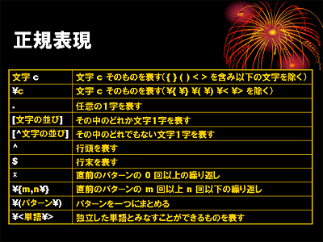
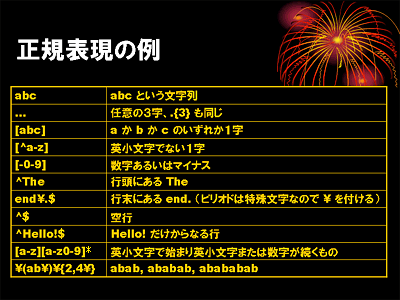
テキストファイルを編集せず単に中身を見たいだけなら，cat コマンドが使えます．しかし cat コマンドはファイルの中身を全部出力してしまうので，長いテキストファイルだと，表示が流れていってしまいます．そこで，ページャと呼ばれるテキストファイルの表示専用のコマンドが用意されています．これには more や，more を強化した less などがあります．
たとえば，report.tex を編集せずに中身を見るだけなら，less コマンドを使った方が emacs を起動するより手っ取り早く中身を表示できます．
| less コマンドでファイル report.tex の中身を見る |
|---|
% less report.tex[Enter] |
ページャを使ってテキストファイルを表示すると，まずそのファイルの先頭部分が表示されます．以下のキー操作によって，見たいところを表示してください．
| ページャのキー操作 | |
|---|---|
| １画面分次に進む | スペース |
| １画面分前に戻る | b |
| １行進む | [Enter] |
| 現在位置から下方に向かって word という語句があるところを検索する | /word |
| 前回の検索を繰り返す | n |
| 前回の検索を反対方向に向かって繰り返す | N |
| ページャを終了する | q |
また，ls -l のように出力が多くて表示が流れていってしまうような場合は，パイプ (|)を使ってその出力を more や less に入力します．
| ls コマンドの出力を less を通して見る |
|---|
% ls -l | less[Enter] |
コマンドの使い方などを調べるときには，オンラインマニュアルを使います．これには（伝統の）man コマンドと，info コマンドがあります．man コマンドは，調べたいコマンドを引数に指定します．manコマンドで表示されるマニュアルは長いので，通常ページャを通して表示されます．
| man コマンドで ls コマンドの使い方を調べる |
|---|
% man ls[Enter] |
man コマンドに関連するコマンドとして，他に whatis と apropos があります．man コマンドがマニュアルを表示するのに対し，whatis はそのコマンドの簡単な説明だけを表示します．また apropos コマンドは，引数に指定したキーワードに関連したコマンドの一覧を表示してくれるので，使いたい機能を持つコマンドを探すときに便利です．
| man 三兄弟 | |
|---|---|
| man コマンド：引数に指定したキーワード（コマンド等）のマニュアルを出力する． |
% man bc[Enter]
bc(1) bc(1)
NAME
bc - An arbitrary precision calculator language
SYNTAX
bc [ -hlwsqv ] [long-options] [ file ... ]
(以下略)
|
| whatis コマンド：引数に指定したキーワードの簡単な説明を表示する． |
% whatis bc[Enter] bc (1) - An arbitrary precision calculator language |
| apropos コマンド：引数に指定したキーワードに関連したコマンド等の一覧を表示する．この例では calculator（計算機）に関連したコマンド等の一覧を表示する |
% apropos calculator[Enter]
bc (1) - An arbitrary precision calculator language
dc (1) - an arbitrary precision calculator
(bc の他に dc という calculator もあることがわかる)
|
info コマンドは起動するとメニューが現れるので，調べたいコマンドのところにカーソルを移動して， [Enter] をタイプしてください．カーソルの移動には矢印キーが使えます．info コマンドを終了するには q をタイプしてください．
| info コマンドの起動 |
|---|
% info[Enter] |
報告はメールで tokoi@sys.wakayama-u.ac.jp まで送ってください．Subject:（件名）は「課題１０」としてください．期限は７月１日中とします．